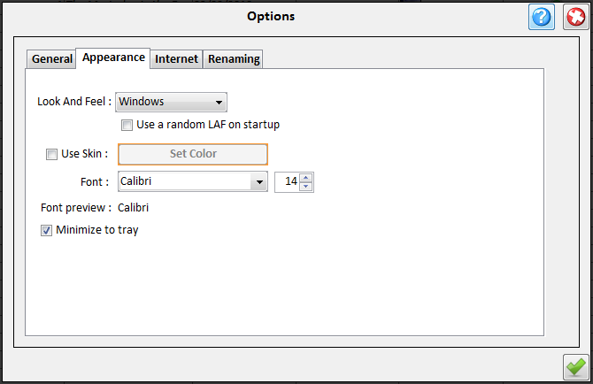

| Appearance Options |
|---|
|  |
|---|
In appearance options you can change the look of the application.
The available options are :
- Look and feel - You can choose the theme used for MySerieS.
You can choose from the installed look and feels (OS dependent) or from
added look and feels. To add a look and feel simple create a directory with its name in the
lafs subdirectory of the application and copy there the look and feel jar file.
After restarting the application the look and feel you added will be available in the drop down menu.
- Use random look and feel - If you want to use a random look and feel each
time the application starts
- Use Skin - If you want to use the default java metal look and feel with a custom color
- Font - You can choose the font face and the size used in MySerieS
- Minimize to tray - If you want MySerieS to minimizeto tray instead of the taskbar.
|